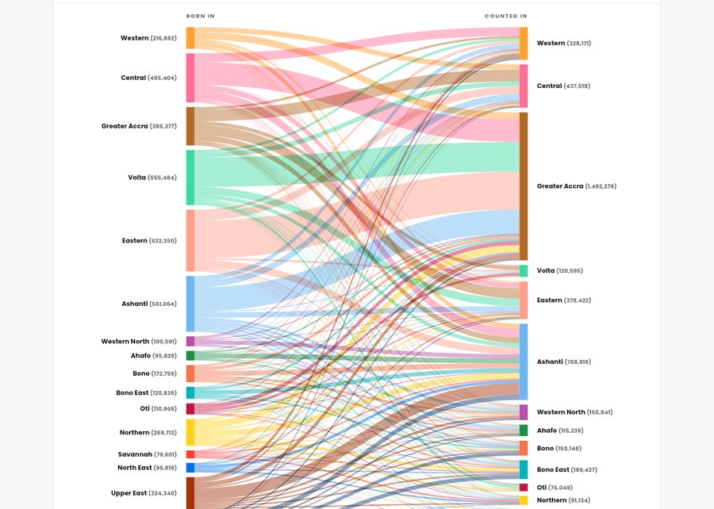
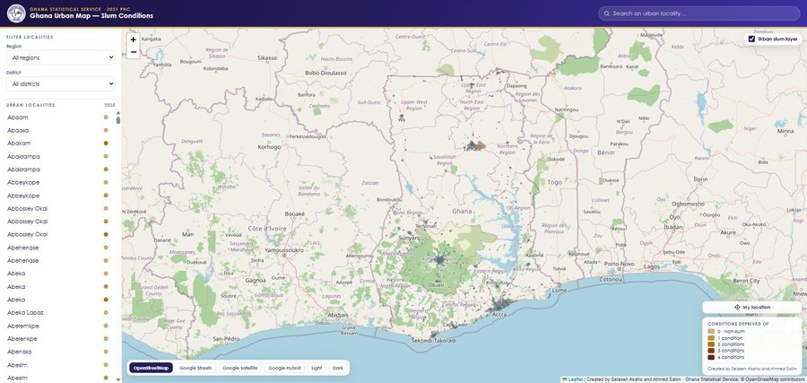

Collection 03
Designs
The creative space — cartographic design, graphics, photography, video and animation. Where data stories get their look: report layouts, brand work and motion pieces built with the Adobe design and video-editing suite.
Gallery
// click a card to open its collectionEach card opens a popup with related pieces from that group.
Visualisation
// data visualisation designData stories built as standalone interactive pieces. Each card opens the full visualisation.

Data Visualisation · Interactive
Lifetime migration between regions, Ghana
Every ribbon is a lifetime migration stream — people enumerated in a region other than the one they were born in.
Open visualisation →
Data Visualisation · Interactive Map
Ghana Urban Map — Slum Conditions Atlas
2021 PHC urban localities mapped and filterable by region and district, classed by number of housing conditions deprived of.
Open visualisation →Toolkit
// creative stack
Adobe IllustratorPhotoshopInDesignPremiere ProFilmoraArcGIS Pro cartographyQGIS print layoutsR ggplot2
Need a data story designed?
From map to motion — let's give your data a look people remember.